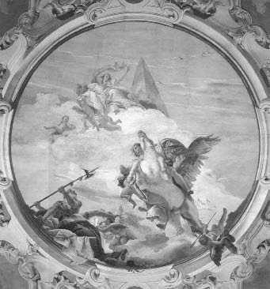

Khimaira, Bellerofontes ve Pegasos
Gerçekte Bellerofontes'in (Bellerophontes) asıl babası, denizlerin ve atların tanrısı, eli yabalı Poseydon'du. Ama herkes onu atları çok seven Korintos kralı Glaukos'un oğlu sanıyordu!.. Bunun nedeni de, Bellerofontes'in babası Glaukos gibi atlara çok düşkün olmasından kaynaklanıyordu... Ne var ki babasını at sevdası bambaşkaydı! Çünkü o, güçlü ve savaşçı olsun diye atlarını, insan etiyle karışık samanla besliyordu! Oysa savaşı hiç sevmeyen oğlu Bellerofontes de babasının doğa yasalarına aykırı olarak atları insan etiyle beslemesine çok üzülüyordu... Ama yazgının bir cilvesi olarak, et yedikleri için soyları bozulup bir çeşit canavara dönüşen bu atlar, gün gelip babasını da parçalayıp yediler!..
Halkın çok sevip saydığı bu güzel ve erdemli yeni yetme Bellerofontes; "bir tek güzel atım olsun, onunla hep dağları bayırları dolaşayım" diye düşler kurardı gece gündüz... Bir gün gene kırlarda dolaşırken, gökyüzünde pırıl pırıl ışıklar saçaraktan uçan, kanatlı bir at gördü. Haliyle ilkin çok şaşırdı... Ama az sonra bu kanatlı at süzüle süzüle alçalmaya başladı ve biraz ötesindeki bir tepeye konuverdi!. Bellerofontes de hemen tepeyi tırmanıp atın yanına doğru gitti, biraz da çekine çekine... At onu görünce bir süre kişnedi; sonra da kanatlarını çırpa çırpa bulutlara karışıp gitti... Bir kez görüp yitirdiği bu at yüzünden artık geceleri gözüne uyku girmez oldu Bellerofontes'in. Bir gece yardım dilediği tanrıça Atena; aslında atların tanrısı Poseydon'un oğlu bu güzel delikanlıya, som altından bir gem verdi ve onunla uçan atın yanına yaklaşmasını öğütledi.
Hemen ertesi sabah Bellerofontes, elindeki bu gemle aynı tepeye gidip uçan kanatlı atını beklemeye başladı... Gerçekten de çok geçmeden ışıklar saça saça yeniden süzülüp geldi o güzel kanatlı at! Bellerofontes usul usul yanaştı ona; okşayıp severken de elindeki gemi ağzına takıverdi!.. At hiç karşı koymadı... Sevinçten içi içine sığmayan Bellerofontes, Pegasos adını verdiği bu kanatlı atın sırtına atladı çekine çekine... At da birden havalanıp sırtındaki yeni dostunu bir süre göklerde ağır ağır dolandırdı... Sonra yeniden aynı tepeye süzülerekten indi... Bu serüven böyle böyle her gün sürüp gitti. Haliyle Bellerofontes'in de keyfine diyecek yoktu...
Bu iyi yürekli Bellerofontes, komşu ülkenin zorba kralı yüzünden durduk yerde elini kana buladı! Bu günahından arınmak üzere başvurduğu bilici; Tirinte kralı Proytos'un sarayına köle olarak sığınmasını öğütledi... Bellerofontes de bilicinin öğüdüne uyup kralın sarayına sığındı. Proytos; konuğuna çok iyi davranıyor, el üstünde tutuyordu. Ne var ki bu iyi yürekli kralın karısı kraliçe Anteya (Anteia), konukları yakışıklı gence çok yakın bir ilgi duymaya başladı. Bu duygu kısa sürede gemlenemez bir tutkuya dönüştü!.. Kraliçe, delikanlının gönlünü çelmek için her gün çeşit çeşit giysilerle karşısına çıkıyor; onunla birlikte olabilmenin yollarını arıyordu cilve üstüne cilveleriyle... Ama bütün yaklaşımları ve hatta en ünlü büyücülerin yardımları bile hep boşa çıkıyordu... Çünkü kendisine çok iyi davranan kralın karısına karşı böyle bir ilişkiyi aklının ucundan bile geçirmek istemiyordu Bellerofontes... Onun bu şekildeki davranışları yüzünden kraliçenin öfkesi gün geçtikçe kabardı da kabardı!.. Öcünü almak üzere kocası kral Proytos'a; konukları Bellerofontes'in kendisine sürekli sarkıntılık ettiğini, artık sabrının da taşmak üzere olduğunu söyledi. Tabii kral, Bellerofontes'i kendi elleriyle yok etmek istedi hemen!.. On gündür birlikte aynı sofrayı paylaştıkları ve konuk bellediği birini öldürmek, hem törelere hem de insanlığa sığmazdı. Başka bir yöntemle cezalandırması gerekiyordu onu... Birden Likya denen Antalya-Fethiye yöresinin kralı ve kayınbabası İobates geldi aklına!.. Kral Proytos, tablet üstüne bir mektup yazdı ve bunu kayınbabasına ulaştırmak üzere konuğu Bellerofontes'in eline tutuşturdu ve onu Likya'ya yolcu etti. Bellerofontes'i Likya kralının kendisi karşıladı sınırda. Dokuz gün dokuz gece ağırladı konuğunu. Sonunda damadının gönderdiği mektubu istedi. Tablet üzerine yazılmış iletiyi çözünce de şaşkına döndü. Çünkü mektupta damadı, Bellerofontes'in öldürülmesini istiyordu! Ama sarayına konuk olarak gelen ve dokuz gündür ağırladığı ve çok beğendiği birini nasıl öldürebilirdi? Hemen o sıralarda Likya'yı kasıp kavuran Himayra (Khimaira) adındaki canavar geldi aklına! Ve kral, söz konusu canavarın ülkeye verdiği zararlardan söz etti Bellerofontes'e. Sonra da onu öldürüp öldüremeyeceğini sordu... Delikanlı, sözü hiç uzatmadan kanatlı atına atladığı gibi havalandı ve kısa sürede arayıp bulduğu canavarı zehirli oklarıyla öldürdü... Canavarın öldürülmesine haliyle hem çok sevinen hem de şaşıran kral, daha zor görevler verdi konuğuna. Örneğin sırf kadın savaşçılardan oluşan Amazonlarla vuruşmaya bile gönderdi... Kanatlı atıyla onların da üstesinden geldi Bellerofontes!.. Sonunda kral İobates, bu iyi huylu kahramanın tanrı soyundan geldiği ve Korintos sarayındaki kızına sarkıntılık etmediği düşüncesine vardı. Bu cana yakın delikanlıya günden güne öylesine kanı kaynadı ki, güzel kızı Filonoe'yi (Philonoe) onunla evlendirdi ve tahtını da ona bıraktı!..
Artık kral Bellerofontes'in yönettiği Antalya ve Fethiye yöresindeki halk, kısa bir süre sonunda barış ve bolluk içinde yaşamaya başladı. Sanatçılar, ülkelerindeki barışın, bolluğun simgeleri olan en güzel insanların ve tanrıların heykellerini yontuyorlardı sürekli olarak... Ressamlar da el birliğiyle ve barış içinde tarlalarını ekip biçen o güzel kadın ve erkeklerin mutlu yaşamlarını desenliyorlardı mermerler üstüne. Dokumacı kadınlar-kızlar da, dokudukları kumaşların ve kilimlerin üstüne, sayısız renk ve desenlerle nakışlıyorlardı mutluluklarını.... Barış içinde süren kardeşçe yaşam, ülkeyi yönlendiren yasaların zembereğiydi artık... O yüzden hem halk hem de Bellerofontes'le atı Pegasos, ülkelerinin mavi ve yıldızlı göklerinde, dört mevsim ekilip dikilen topraklarında, mutlu mutlu yaşayıp gidiyorlardı.
Ne var ki bir gün kral Bellerofontes, ülkesindeki insanların Olimpos'taki tanrılardan daha mutlu olduğunu söyledi bir şölen sırasında... Çünkü tanrılar kendi aralarında bile sürekli savaş halindeydiler!.. Bu söylediklerinin gerçekliğini kanıtlamak için de atı Pegasos'la birlikte, tanrıların ülkesi Olimpos'a doğru uçmaya başladı bir gün... Durumu anında öğrenen Baştanrı Zeus, insanları tanrılarla kıyaslamaya ve onlara meydan okumaya kalkan Bellerofontes'in üstüne şimşekler çaktıran bir yıldırım gönderdi. Şimşeklerden ürken kanatlı at Pegasos, göklerin daha da derinliklerine doğru şahlana şahlana uçmaya başladı. Ne var ki bu hengâmede can dostu Bellerofontes dengesini yitirdi ve o büyük boşlukta, yıldızlardan yıldızlara savrula savrula düşmeye başladı. Düştüğü yerden de bir daha doğrulup kalkamadı...
Kanatlı at Pegasos olup bitenlere çok üzüldü; artık yemez içmez oldu... Bellerofontes'in babası tanrı Poseydon da bu güzel atı, Akdeniz göklerinde pırıl pırıl yanıp sönen bir yıldıza dönüştürdü.
Likyalılar da mermerden bir anıt mezar oydular ve oraya çok sevdikleri barışsever kralları delişmen Bellerofontes'in küllerini gömdüler.